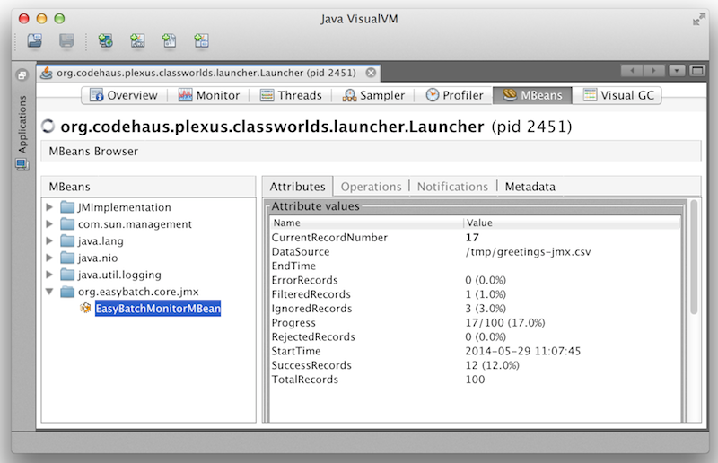

Easy Batch allows you to monitor job execution and progress at runtime using JMX.
The JMX MBean named org.easybatch.core.jmx:type=EasyBatchMonitorMBean
exposes the following attributes:
In order to register this JMX MBean at application's startup, you should enable it using the following API:
Engine engine = new EngineBuilder()
.enableJMX(true)
.build();You can then use any standard JMX compliant tool such as VisualVM to visualize monitoring attributes.
The screenshot below shows an example of Easy Batch monitoring using VisualVM:

In this tutorial, you will use the same application developed in the Hello World tutorial. The main difference is that you will build a new slow processor to simulate long running processing:
public class TweetSlowProcessor implements RecordProcessor<StringRecord, StringRecord> {
@Override
public StringRecord processRecord(StringRecord record) throws Exception {
//slow down the processor for demonstration purpose
Thread.sleep(3000);
System.out.println(record.getPayload());
return record;
}
}The complete source code of this tutorial can be found here.
To run the tutorial from scratch, follow these steps:
$>git clone https://github.com/benas/easy-batch.git
$>cd easy-batch
$>mvn install
$>cd easybatch-tutorials
$>mvn exec:java -PrunJmxTutorial
This will run the engine and you should have enough time to launch VisualVM and monitor progress in real time.
Once you have launched the tutorial, open VisualVM, connect to the jvm process running your batch and navigate to the MBeans tab (if you don't see the MBeans tab, here is how to install the plugin).
As described in the screen shot above, navigate to the org.easybatch.core.jmx:type=EasyBatchMonitorMBean MBean and you will be able to monitor the execution progress of the slow Hello World tutorial in real time.
First, you need to checkout the source code of the tutorial available here:
$>git clone https://github.com/benas/easy-batch.gitIf you do not have git installed, you can download a zip file containing the project's source code from GitHub here.
Then, import the easybatch-tutorials module in you favorite IDE and resolve maven dependencies.
Finally, run the org.easybatch.tutorials.advanced.jmx.Launcher class without any argument.
In this tutorial, you have learned how to monitor job execution at runtime. Real time monitoring is an essential requirement for every production application and Easy Batch provides you this feature with no cost.
In the next tutorial, you will tackle another production requirement which is scheduling job executions. Easy Batch provides integration with Quartz to schedule job execution.